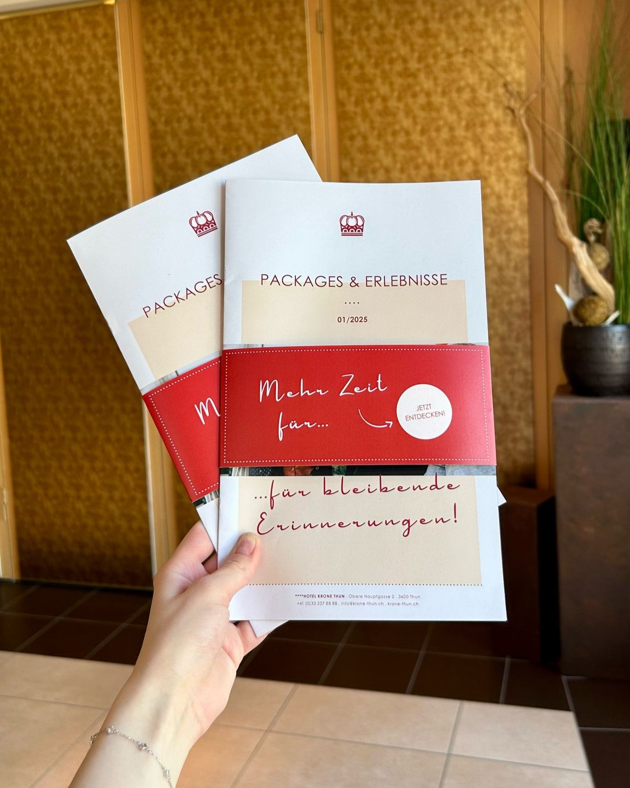
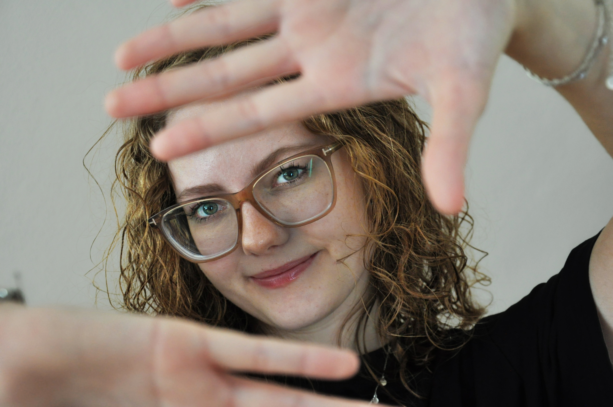
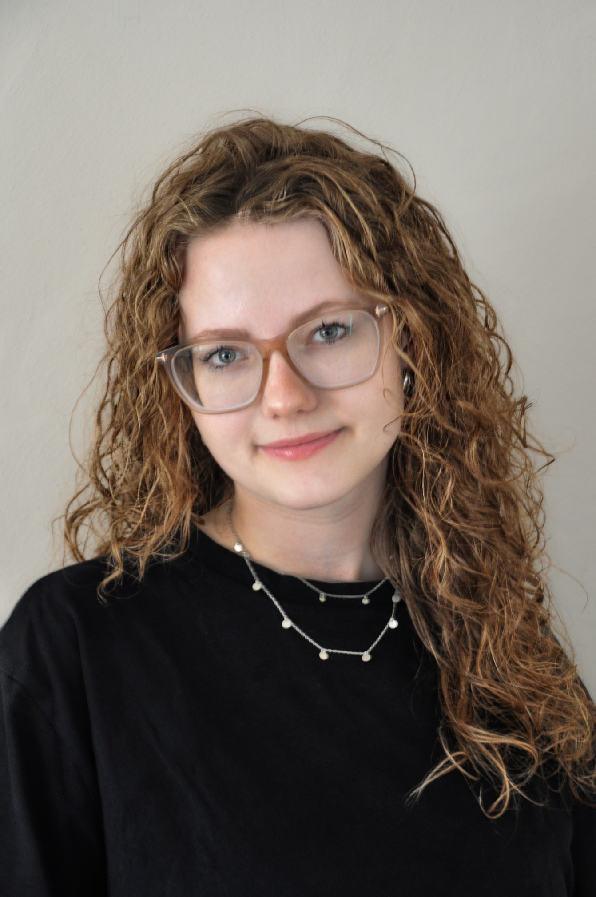
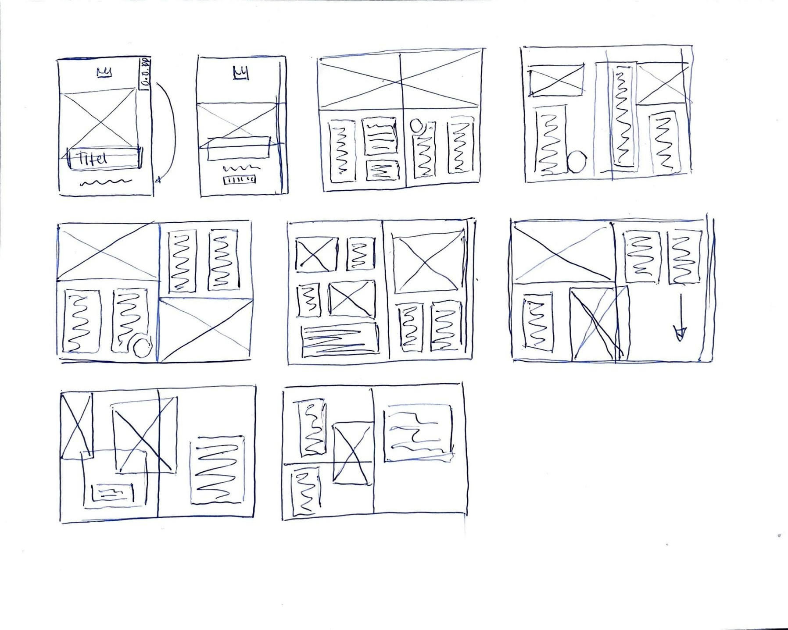
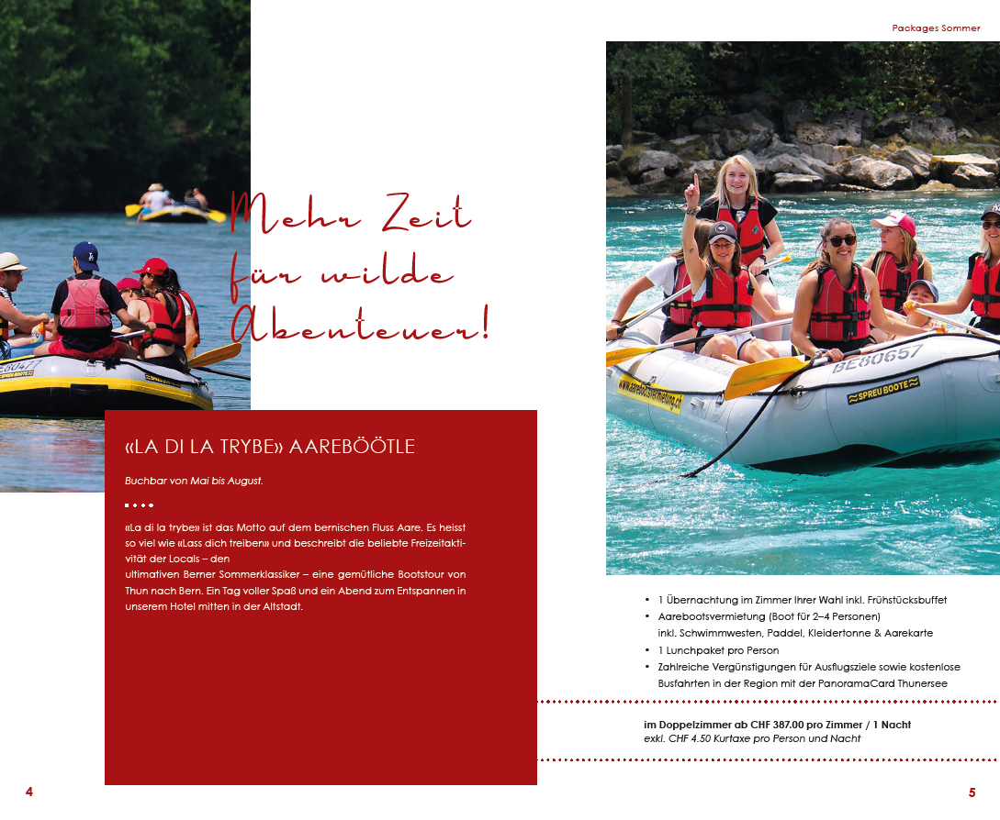
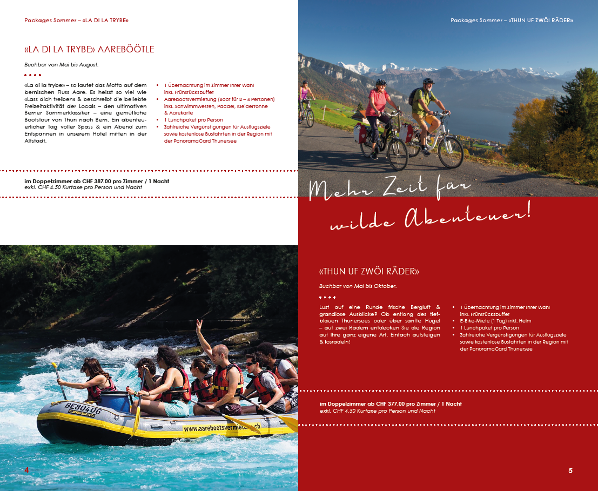

Packagezeitung Editorial · Print 01
Mediamatikerin
Print · Branding · Fotografie · Content
PORTFOLIO
Visuelle Ideen, Printprodukte, Markenwelten und Content – ausgewählte Arbeiten aus Ausbildung, Praxis und eigenen Projekten.

Selected work
Eine Auswahl aus Print, Branding, Social Media, Typografie und Fotografie.



Hey, ich bin Carole.
Mediamatikerin mit grosser Leidenschaft für Print, Branding, Typografie und Fotografie.
Ich mag Projekte, die mit einer leeren Seite beginnen und Schritt für Schritt Gestalt annehmen. Während meiner Ausbildung habe ich gelernt, Gestaltung nicht isoliert zu betrachten: Inhalt, Zielgruppe, Format und Umsetzung gehören für mich genauso dazu wie Farbe, Bild und Typografie.
Am liebsten arbeite ich an Aufgaben, bei denen ich Ideen entwickeln, verschiedene Richtungen ausprobieren und am Ende sehen kann, was daraus geworden ist – ob Zeitung, Eventauftritt, Social-Media-System oder Marke.
Ich bin neugierig, probiere gerne Neues aus und kann mich ziemlich lange an kleinen Details festbeissen. Gleichzeitig mag ich Abwechslung und möchte mich gestalterisch weiterentwickeln.
Was mir wichtig ist
Mein Ziel ist nicht einfach, etwas Schönes zu gestalten. Es soll zum Inhalt, zur Zielgruppe sowie zum Medium passen. Trotzdem soll es Charakter haben.
Eine klare Ausgangslage
Bevor ich gestalte, will ich verstehen, was ein Projekt eigentlich erreichen soll. Eine klare Ausgangslage und eine spannende Idee trägt für mich mehr als reine Dekoration.
Ein eigenes Gefühl
Typografie, Farbe, Bild und Details sollen zusammen eine Stimmung ergeben, die zum Projekt passt und wiedererkennbar bleibt.
Sauber bis zum Schluss
Am Ende zählen für mich auch Raster, Abstände, Formate und technische Details. Genau dort entscheidet sich oft, ob etwas wirklich stimmig wirkt.
So arbeite ich
So erfolgt mein Ablauf von einem Projekt bishin zum fertigen Endprodukt.
Verstehen
Was soll entstehen, für wen ist es gedacht und was muss am Ende funktionieren?
Ausprobieren
Ich sammle Richtungen, teste Typografie, Farbe und Aufbau und verwerfe auch Ideen. Oftmals starte ich mit einem Moodboard und erstelle Skizzen.
Gestalten
Aus einzelnen Ideen entstehen Entwürfe und daraus ein einheitliches System.
Ausarbeiten
Zum Schluss geht es um Details, Hierarchie, Reinzeichnung, eine saubere Umsetzung und zum fertigen Exportprodukt.



Skills & Tools
Was ich gut kann und welche Tools ich im Alltag wirklich nutze.
Design
Adobe InDesign
Adobe Illustrator
Adobe Photoshop
Editorial Design
Branding
Typografie
Content
Fotografie
Social Media
Content Creation
Canva
Eventkommunikation
Digital
HTML & CSS
VS Code
Webdesign Basics
Mein Weg
Mein Weg begann schon viel früher als erst in der Ausbildung. Meine Begeisterung für Fotografie und das Auge fürs Designen begann bereits in der Schulzeit.
2021 – 2023
Grundausbildung BICT AG
Zwei Jahre Grundlagen in Gestaltung, Fotografie, Video, Kommunikation und digitalen Themen. Hier entstand die Basis für die spätere Praxis.
2023 – 2025
Hotel Krone Thun
Zwei Jahre Praxis mit Print, Social Media, Fotografie, Eventkommunikation und vielen Projekten, die heute einen grossen Teil meines Portfolios bilden.
2025 – 2026
Berufsmaturität
Nach der Lehre folgte die Berufsmaturität und gleichzeitig mehr Raum für eigene Projekte, Portfolioarbeit und kleinere selbstständige Gestaltungsaufträge.
2026 – heute
Üsi Buttig
Ein bis zwei Tage pro Woche unterstütze ich die Boutique bei Content und Gestaltung. Daneben setze ich immer wieder kleinere eigene Aufträge um, zum Beispiel Logos oder Social-Media-Templates.
Heute
Nächstes Kapitel gesucht
Ich suche eine kreative Stelle, bei der ich meine gestalterischen Stärken einsetzen, dazulernen und eigene Ideen einbringen kann.
Good to know
FAQ’s.
Ein paar Sachen, die man vielleicht wissen will, ohne dafür eine halbe Website zu durchsuchen.
Ich bin auf der Suche nach einer spannenden Stelle, bei welcher ich kreativ arbeiten kann und meine Ideen einbringen darf. Besonders interessieren mich Grafikdesign, Branding, Print, Social Media und Content Creation. Wichtig ist mir vor allem Abwechslung und die Möglichkeit, mich kreativ weiterzuentwickeln.
Am liebsten entwickle ich Ideen und setze sie visuell um. Ich mag es, mit Farben, Schriften, Bildern und verschiedenen Gestaltungsmöglichkeiten zu experimentieren, bis alles zusammenpasst. Besonders schön finde ich Projekte, bei denen ich von der ersten Idee bis zum fertigen Ergebnis mitwirken kann.
Ich probiere gerne verschiedene Ansätze aus und achte auch auf die kleinen Details. Wenn ich etwas noch nicht kann, finde ich gerne selbst heraus, wie es funktioniert, informiere mich und lerne dabei Neues dazu. Feedback ist mir wichtig und ich entwickle meine Arbeit damit weiter.
Ja. Ich durfte bereits Erfahrung mit kleineren Freelance-Projekten sammeln. Von Logos über Social-Media-Templates bis zu Fotoaufnahmen. Für passende kreative Projekte bin ich weiterhin offen.
Kontakt
Passt mein Portfolio
zu deinem Team?
Dann freue ich mich, von dir zu hören.